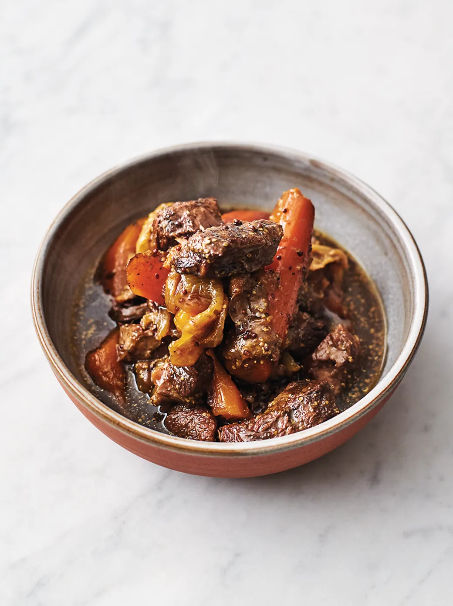

Meltin Mustardy Beef

Description
Here's a good, solid stew recipe to have in the repertoire - meltin' mustardy beef, made with just 5 ingredients! Anyone else starting to get that autumn feeling? Means it's comfort food season!
If your knife-work is deft, it will take eight minutes to dice and brown the beef, chop the carrots, quarter the onions, and stir in the Worcestershire sauce and mustard. From that point on, you can sit back and let the oven do its thing.
Ingredients
- 2lbs of Beef Shank (either butcher the meat off the bone yourself or ask butcher for the bones)
- 1 lb of carrots
- 2 white onions
- 1/2 lb of button mushrooms
- 3 tbsp Worcestershire sauce
- 2 tbsp wholegrain mustard
- 1 tbsp olive oil
Steps
- Preheat the oven to 325 degrees
- Place a large shallow casserole pan on a high heat, with a large non-stick frying pan on a high heat alongside.
- Dice the beef into 1 inch chunks and toss with a generous amount of black pepper and a pinch of sea salt, then dry fry in the hot frying pan with the bone for 8 minutes.
- Meanwhile, wash and trim the carrots, chop into 1 inch chunks, and place in the casserole pan with 1 tablespoon of olive oil.
- Peel and quarter the onions and break apart into petals, straight into the pan, stirring regularly.
- wash mushrooms and throw in to the pan too cook with the onions
- When the meat is nicely coloured, tip it into the casserole pan, then stir in the Worcestershire sauce and mustard, and cover with of boiling kettle water.
- Cover, then cook in the oven for 4 hours, or until the beef is meltingly tender. Loosen with a splash of water, if needed. Taste, season to perfection, and serve. (the flavor is intense so I prefer to serve on mashed potatoes, rice or toast)